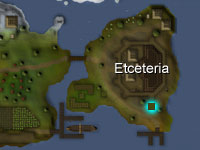
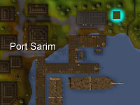
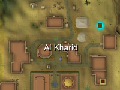

")
Farming - Patches
Full Patches | Bush Patches | Hop Patches | Tree Patches | Fruit Tree Patches
Spirit Tree Patches | Special_Patches | Quest Patches
Spirit Tree Patches | Special_Patches | Quest Patches
Full Patches
![[image: location of ardougne farm]](../../img/main/kbase/skills/farming/patch_maps/patch_full_east_ardougne.jpg "location of ardougne farm") |
North of East Ardougne. | ![[image: location of catherby farm]](../../img/main/kbase/skills/farming/patch_maps/patch_full_catherby.jpg "location of catherby farm") |
North of Catherby. |
![[image: location of falador farm]](../../img/main/kbase/skills/farming/patch_maps/patch_full_falador.jpg "location of falador farm") |
South-east of Falador. | ![[image: location of port phasmatys farm]](../../img/main/kbase/skills/farming/patch_maps/patch_full_port_phasmatys.jpg "location of port phasmatys farm") |
North-west of Port Phasmatys. |
Bush Patches
![[image: location of ardougne bush patch]](../../img/main/kbase/skills/farming/patch_maps/patch_bush_east_ardougne.jpg "location of ardougne bush patch") |
South of East Ardougne. | ![[image: location of etceteria bush patch]](../../img/main/kbase/skills/farming/patch_maps/patch_bush_etceteria.jpg "location of etceteria bush patch") |
South-west of Etceteria Castle. |
![[image: location of rimmington bush patch]](../../img/main/kbase/skills/farming/patch_maps/patch_bush_rimmington.jpg "location of rimmington bush patch") |
North of Chemist's house in Rimmington. | ![[image: location of champions' guild bush patch]](../../img/main/kbase/skills/farming/patch_maps/patch_bush_varrock.jpg "location of champions' guild bush patch") |
South-west of Varrock, next to the Champions' Guild. |
Hop Patches
![[image: location of entrana hop patch]](../../img/main/kbase/skills/farming/patch_maps/patch_hop_entrana.jpg "location of entrana hop patch") |
South-west coast of Entrana. | ![[image: location of lumbridge hop patch]](../../img/main/kbase/skills/farming/patch_maps/patch_hop_lumbridge.jpg "location of lumbridge hop patch") |
Across the river, along the route from Lumbridge to Varrock. |
![[image: location of seers' village hop patch]](../../img/main/kbase/skills/farming/patch_maps/patch_hop_seers.jpg "location of seers' village hop patch") |
North of McGrubor's Wood, north-west of Seers' Village. | ![[image: location of yanille hop patch]](../../img/main/kbase/skills/farming/patch_maps/patch_hop_yanille.jpg "location of yanille hop patch") |
North of Yanille. |
Tree Patches
![[image: location of falador tree patch]](../../img/main/kbase/skills/farming/patch_maps/patch_tree_falador.jpg "location of falador tree patch") |
In Falador Park. | ![[image: location of lumbridge tree patch]](../../img/main/kbase/skills/farming/patch_maps/patch_tree_lumbridge.jpg "location of lumbridge tree patch") |
North-west behind Lumbridge Castle. |
![[image: location of taverley tree patch]](../../img/main/kbase/skills/farming/patch_maps/patch_tree_taverley.jpg "location of taverley tree patch") |
South-east in Taverley. | ![[image: location of varrock palace tree patch]](../../img/main/kbase/skills/farming/patch_maps/patch_tree_varrock.jpg "location of varrock palace tree patch") |
South-east of Varrock Palace, inside the grounds. |
![[image: location of gnome stronghold tree patch]](../../img/main/kbase/skills/farming/patch_maps/patch_tree_tree_gnome_stronghold.jpg "location of gnome stronghold tree patch") |
West of the Agility Training Area in the Tree Gnome Stronghold. |
Fruit Tree Patches
![[image: location of brimhaven fruit tree patch]](../../img/main/kbase/skills/farming/patch_maps/patch_fruit_tree_brimhaven.jpg "location of brimhaven fruit tree patch") |
North coast of Brimhaven. | ![[image: location of catherby fruit tree patch]](../../img/main/kbase/skills/farming/patch_maps/patch_fruit_tree_catherby.jpg "location of catherby fruit tree patch") |
South-east of Catherby. |
![[image: location of grand tree fruit tree patch]](../../img/main/kbase/skills/farming/patch_maps/patch_fruit_tree_tree_gnome_stronghold.jpg "location of grand tree fruit tree patch") |
South-east of the Grand Tree in the Tree Gnome Stronghold. | ![[image: location of tree gnome village fruit tree patch]](../../img/main/kbase/skills/farming/patch_maps/patch_fruit_tree_tree_gnome_village.jpg "location of tree gnome village fruit tree patch") |
North-west of the Tree Gnome Village. |
![[image: location of Lletya fruit tree patch]](../../img/main/kbase/skills/farming/patch_maps/patch_fruit_tree_lletya.jpg "location of Lletya fruit tree patch") |
South-east corner of Lletya. |
Spirit Tree Patches
|  | South of Etceteria Castle. |  | North-east of Port Sarim. |
![[image: location of brimhaven spirit tree patch]](../../img/main/kbase/skills/farming/patch_maps/patch_spirit_tree_brimhaven.jpg "location of brimhaven spirit tree patch") |
North-east of Brimhaven. |
Special Patches
![[image: location of draynor manor belladonna patch]](../../img/main/kbase/skills/farming/patch_maps/patch_special_draynor_manor.jpg "location of draynor manor belladonna patch") |
Belladonna West of Draynor Manor. |
 | Cactus North-east of Al Kharid. |
![[image: location of tai bwo wannai calquat patch]](../../img/main/kbase/skills/farming/patch_maps/patch_special_tai_bwo_wannai.jpg "location of tai bwo wannai calquat patch") |
Calquat North of Tai Bwo Wannai Village, Karamja. |
![[image: location of canifis mushroom patch]](../../img/main/kbase/skills/farming/patch_maps/patch_special_canifis.jpg "location of canifis mushroom patch") |
Mushroom South-west of Canifis. |
![[image: location of evil turnip patch]](../../img/main/kbase/skills/farming/patch_maps/patch_quest_draynor_manor.jpg "location of evil turnip patch") |
Evil turnip West of Draynor Manor. |
Quest Patches
![[image: location of my arm's herb patch]](../../img/main/kbase/skills/farming/patch_maps/patch_quest_troll_stronghold.jpg "location of my arm's herb patch") |
Herbs Above the Troll Stronghold; you must have completed My Arm's Big Adventure. |
![[image: location of harmony allotment patch]](../../img/main/kbase/skills/farming/patch_maps/patch_quest_harmony_island.jpg "location of harmony allotment patch") |
Allotment On Harmony Island; you must have started the Great Brain Robbery quest. |
![[image: location of jade vine patch]](../../img/main/kbase/skills/farming/patch_maps/patch_quest_east_ardougne.jpg "location of jade vine patch") |
Jade vine Lord Handelmort's mansion, East Ardougne; you must have completed Back to my Roots. |
![[image: location of limpwurt patch]](../../img/main/kbase/skills/farming/patch_maps/spiritofsummer_limpwurt.jpg "location of limpwurt patch") |
Limpwurt Ruins, the Wilderness; you must have started Spirit of Summer. |
Click here to view the Farming FAQs

More articles in
Farming (Members Only)
|
|
|
Further Help
If this article does not help you, you may find the following sections of the RuneScape site helpful:
|
|